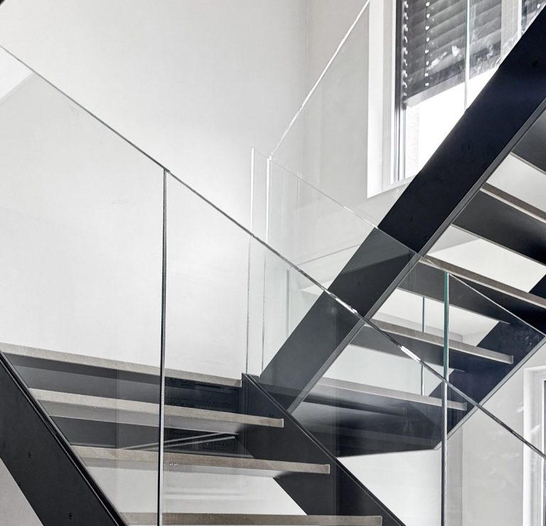
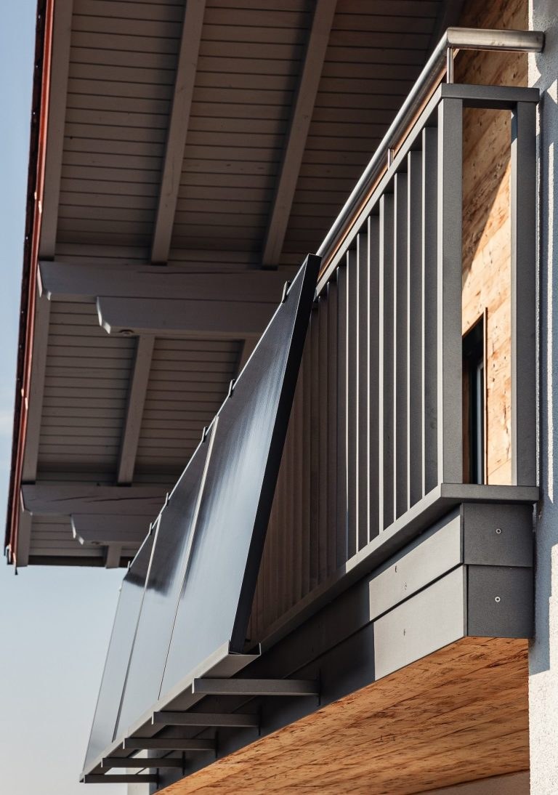
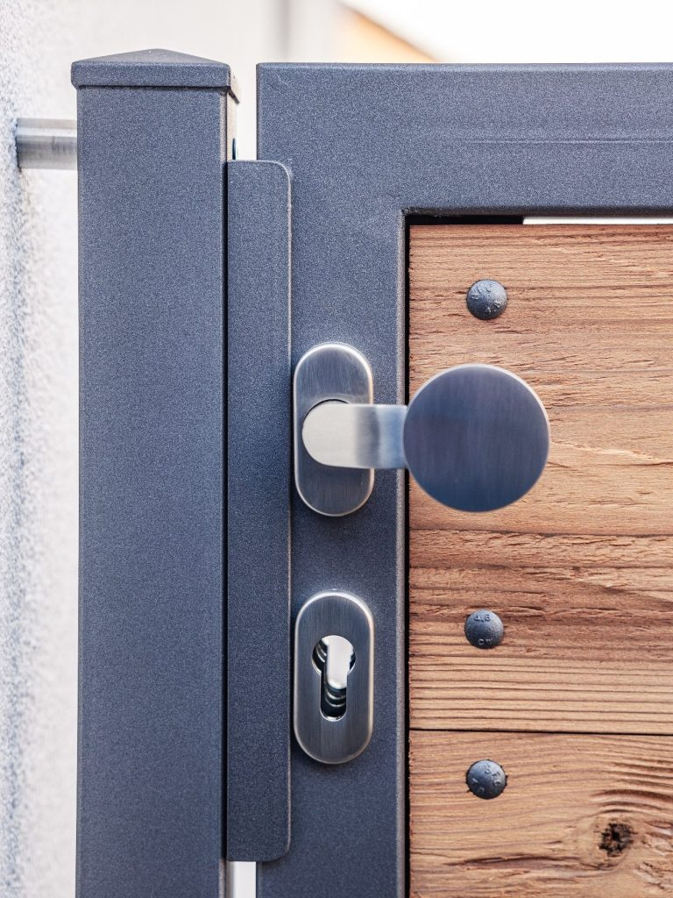
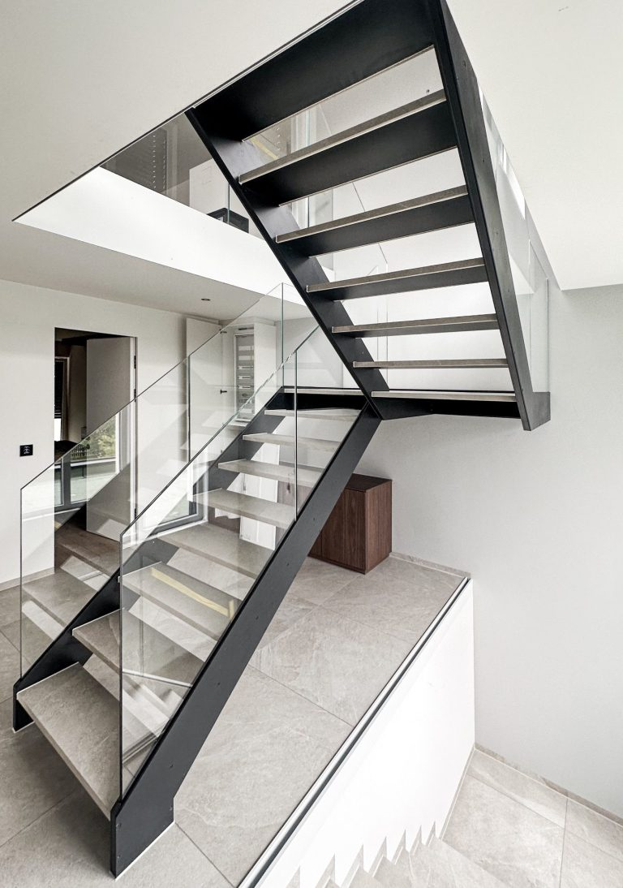
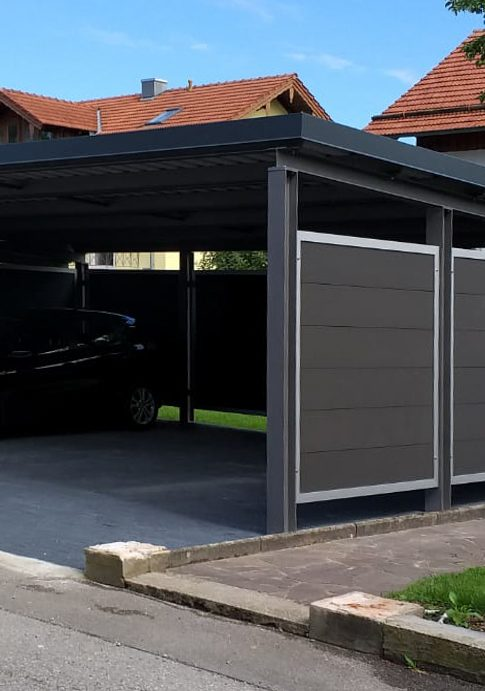
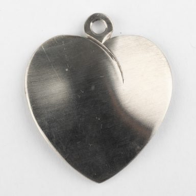

Metallbau aus Grafing bei München
Metallbau
Larasser
Larasser Metallbau ist seit 1996 in Grafing b. München im Metallhandwerk tätig. Der Meisterbetrieb arbeitet in den Bereichen Schlosserarbeiten, Metall-, Stahl- und Glasbau, Edelstahl, Reparaturen und Service, Blechverarbeitung sowie zertifizierte Schweißarbeiten nach EN 1090-2 EXC2.
mehr Informationen
Referenzen
Unsere Bereiche
Die Bereiche und Projekte des bestehenden Webauftritts bleiben erhalten. Ergänzend bündelt „Sonderanfertigungen“ ausgewählte individuelle Arbeiten, ohne neue Projektangaben zu erfinden.

Interior
mehr Informationen
Balkone & Terrassen
mehr Informationen
Tore & Zäune
mehr Informationen
Treppen & Geländer
mehr Informationen
Carports, Dächer & Stahlbau
mehr Informationen
Medallions
mehr Informationen
Sonderanfertigungen
ausgewählte individuelle Arbeiten
Lohnbiegen & Lohnschneiden
Bauteil direkt anfragenZertifizierung
Schweißfachbetrieb, zertifiziert nach EN 1090-2 EXC2
Schweißfachmann EWS
Kontakt
Wir sind bereit für Ihr Projekt.
Telefon: +49 8092 709151
E-Mail: stephan.larasser@t-online.de
Ebersberger Straße 10 A, 85567 Grafing b. München
Öffnungszeiten
Montag bis Donnerstag
07:30–16:00
Freitag
07:30–12:00
Direkter Kontakt
Stephan Larasser · +49 171 5248966
Martin Larasser · +49 177 3248147